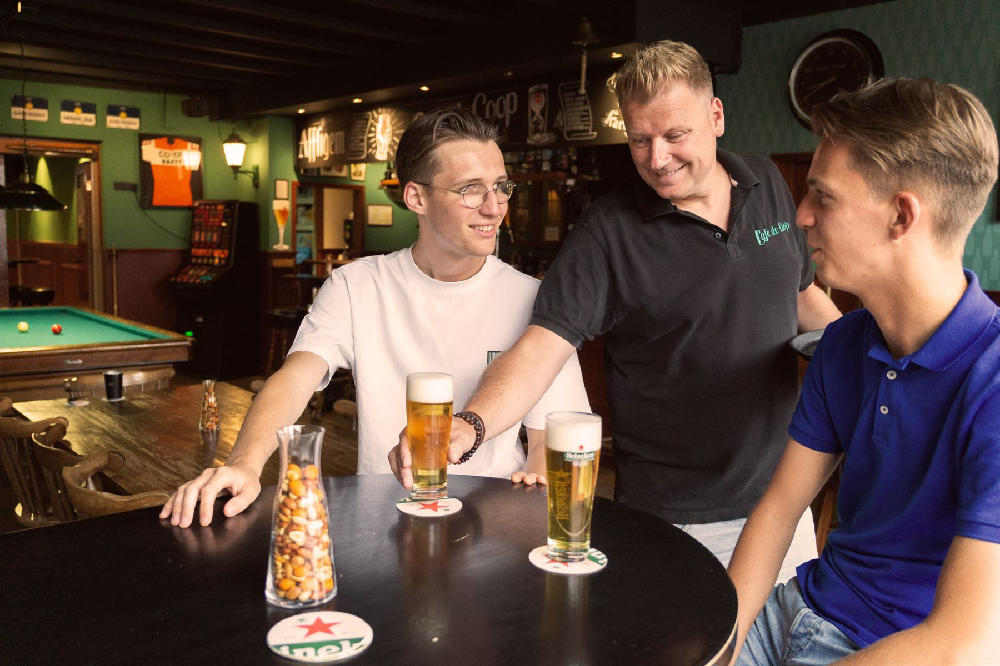
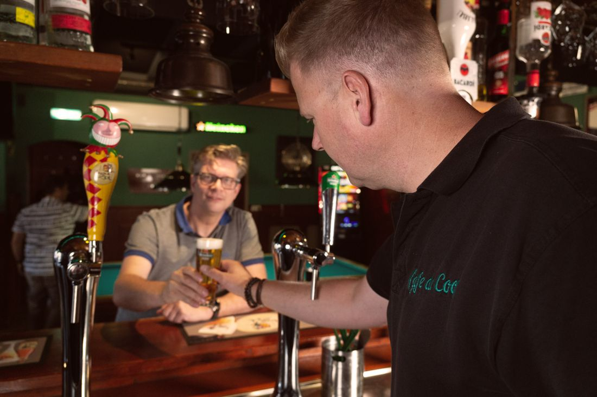
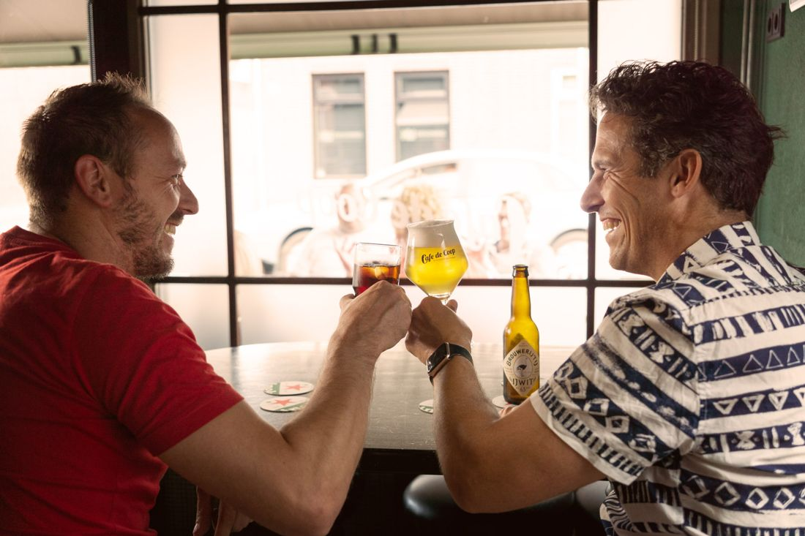
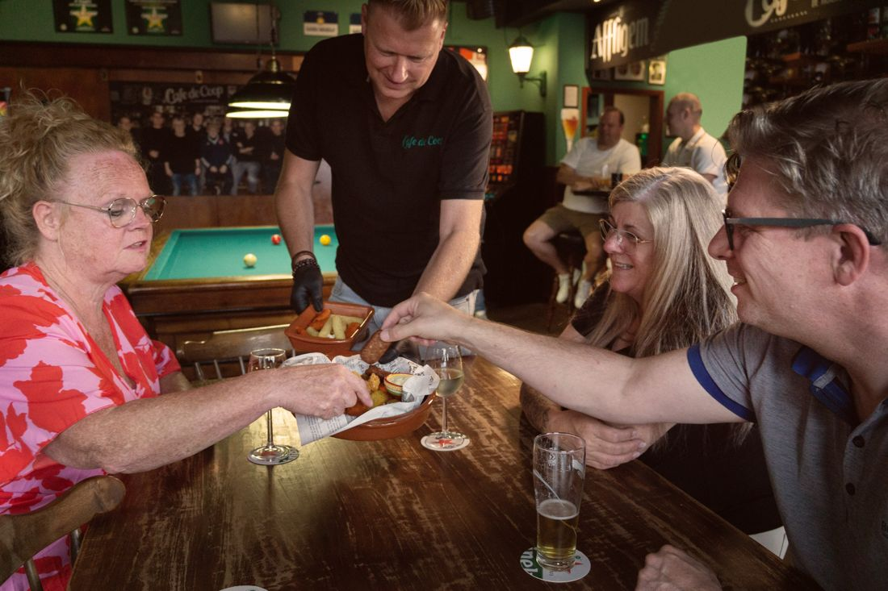
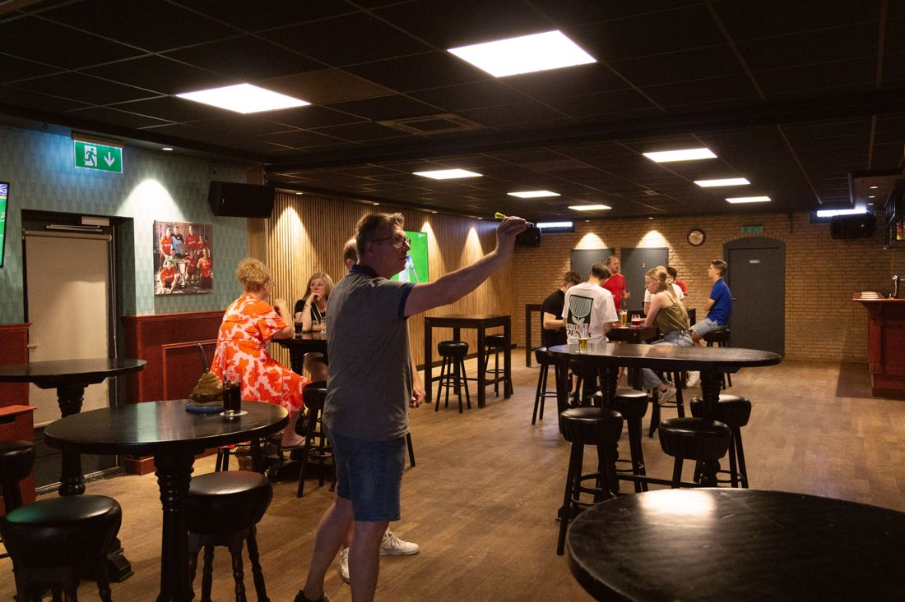
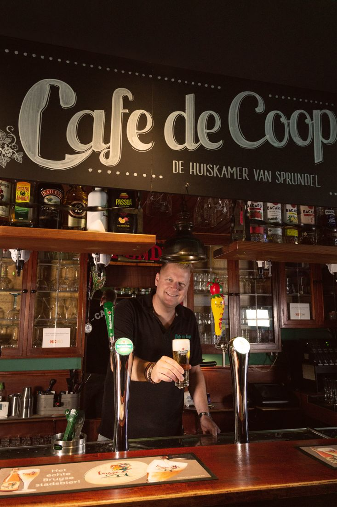
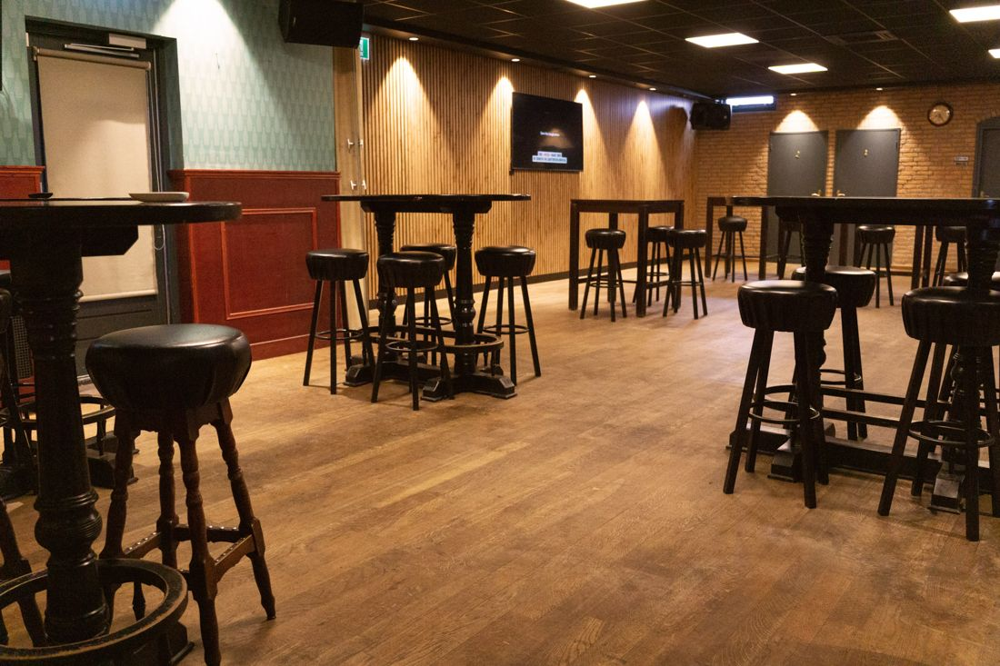
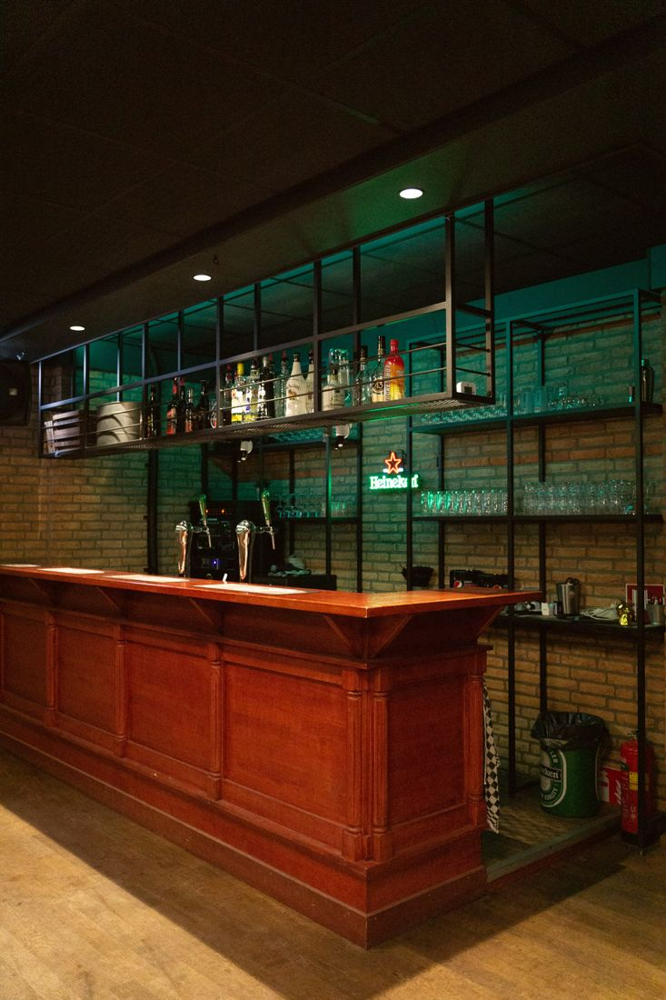
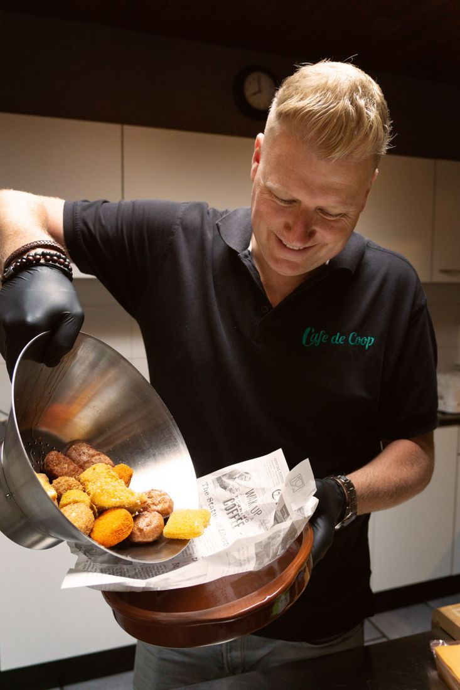
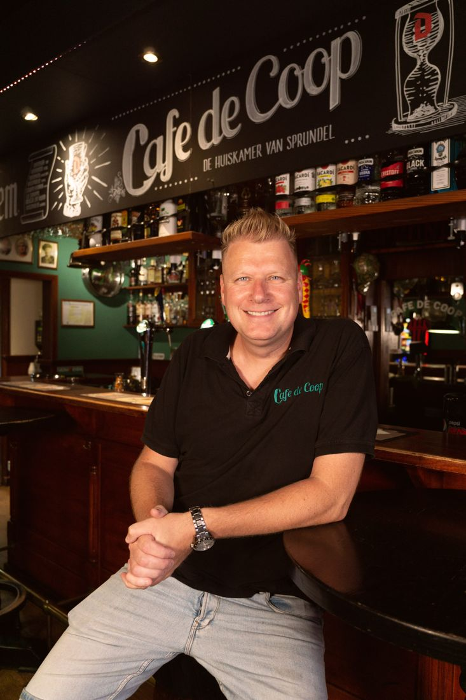

De huiskamer van Sprundel
Een knus bruin café met een lange geschiedenis, 25 speciaalbieren en een zaal voor feesten tot 200 personen. Vijf dagen per week bent u van harte welkom.
Altijd wat te beleven
Een plek voor iedereen, waar jong en oud met elkaar afspreken.

Het café
Veel vaste gasten komen speciaal voor de warme, knusse sfeer. Laat u eens verrassen door onze barman.

25 speciaalbieren
Of u nou gewoon van een lekker biertje houdt, of van een sublieme mix. Wij schenken waar u zin in heeft.

Thuisbasis voor verenigingen
Voor darten en biljarten, of als vaste stek na een toer- of fietstocht. Al sinds jaar en dag.

Feesten en partijen
Een eigen zaal voor 25 tot 200 personen, uit te breiden met de tussenruimte en het café.
Bekijk de zaalOpeningstijden
Vijf dagen per week open. Op zondag al vanaf 10.30 uur.




Feesten en partijen
Groot feest? Klein feest? Voor ons is niets gek genoeg. Onze zaal is uit te breiden met de tussenruimte en het café, zodat u altijd de juiste ruimte heeft: groots, maar met een intieme uitstraling.
- Van 25 tot 200 personen
- Zaal uit te breiden
- LED-verlichting in elke kleur
- Airco in de hele kroeg
Feesten en borrels
Feesten of borrels van 25 tot 200 personen. Vraag naar de mogelijkheden, wij leggen graag uit hoe we te werk gaan.
Recepties
Met de zaal afgeschermd in alle rust. Wilt u meer openheid, dan betrekken we het café erbij.
Vergaderen en bijeenkomsten
Van apparatuur tot de nodige versnapering: alles staat voor u klaar, zodat iedereen de spreker goed hoort.
Iets te vieren?
Laat ons weten wat u in gedachten heeft en met hoeveel personen u komt. We nemen snel contact met u op.

Maak kennis met Ronnie
"Als de klant het goed heeft, dan heb ik dat ook!"Ronnie Gommers, eigenaar
In 2011 nam Ronnie het café over en maakte er al snel de huiskamer van Sprundel van. De basis is simpel: bijdragen aan de gemoedelijkheid van het dorp en mensen met elkaar verbinden. Ook als u niet uit de buurt komt.
De Coop zet zich in voor evenementen als de Roparun. En speelt Oranje, dan worden er hamburgers uitgedeeld. Net dat beetje extra.
Feest aanvragen
Vertel ons wat u wilt vieren, wanneer en met hoeveel personen. Wij denken graag met u mee.
Liever even bellen?
Of kom gewoon eens langs aan de Sint Janstraat. U bent van harte welkom.